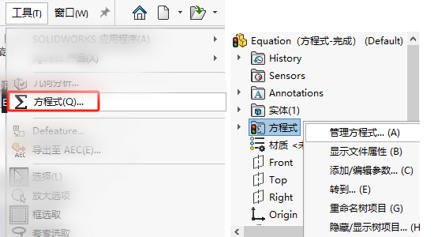
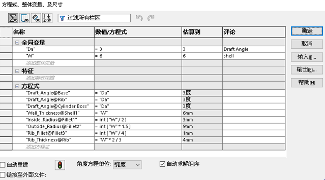
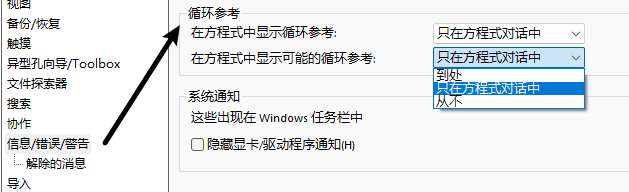

SOLIDWORK-方程式
在【工具-方程式】启用该功能。并且在设计树里可以做编辑


全局变量
自定义一个变量，做后续参与方程式计算使用；
特征
针对特征压缩/解压缩操作；可以搭配if函数对特征进行判断压缩。格式如下：If(判断, “是”的结果,“否”的结果)
1 | If("D1@Sketch4">15, 20, 10) |
方程式
利用前面以及模型上尺寸的选择，进行等式计算，驱动结果。
其他功能
自动求解组序选项
您可使用自动求解组序选项自动将方程式以软件所决定的顺序排序以产生精确结果。
您可以在方程式、全局变量和尺寸对话框中选择自动求解顺序选项。 选中此选项后，SOLIDWORKS 软件会识别非独立方程和阶次方程，以便在执行非独立方程之前执行独立方程。 如果方程 B 被定义为方程 A 的函数，则必须先求解方程 A。
例如，在下面的两个方程式中，软件首先估算 “D2@Sketch1@part_inside.Part“，从而可以安全地用作方程式中 “D1@Sketch1@part_outside.Part“ 的变量。
1 | “D1@Sketch1@part_outside.Part” = “D2@Sketch1@part_inside.Part” + 2 |
Q&A
循环参考
方程式包括循环引用，可能会造成计算结果死循环影响结果值。出现情况如下：变量间会相互影响
1 | “D1@xx” = “D2@xx” + 2 |

添加编辑参数
方程式添加编辑参数命令有什么用途？